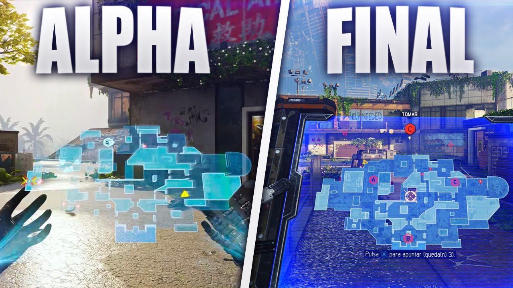
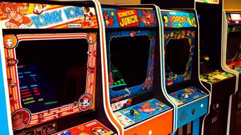
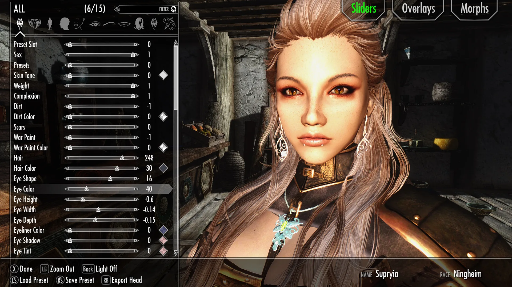
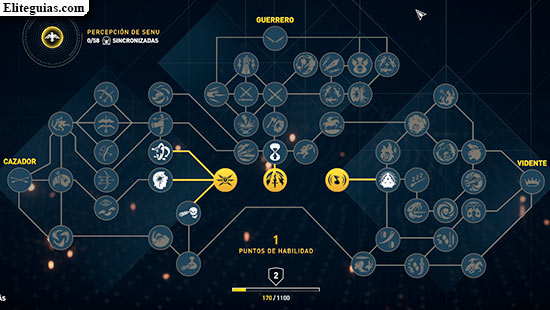

- Alfa
- La version alfa de un jeugo es la primera version funcional del mismo. Aunque inestable,
a menudo es la primera version a la que los testers o probadores del juego tiene acceso para
reportar errores. Raramente se hace accesible al publico
|

|
- Arcade
- Termino generico para referirse a las maquinas recreativas
|

|
- Avatar
- Representacion grafica que se asocia al jugador para su identificacion en una plataforma online, red social, foro, etc. A menudo son simples fotografias o dibujos pero ciertas paltaformas, como Xbox live de Microsoft cuentan con su propia representacion tridimenional del jugador
|

|
- Árbol de Habilidades
- Conjunto de habilidades que el jugador puede ganar o desbloquear a medida que progresa en el juego, normalmente mediante la consecucion de una cantidad determinada de puntos de experiencia o equivalante.
|

|
- Ambientación
- Conjunto de elementos que definien el estilo de un videojuego por ejemplo tiempo, ubicacion, argumento, diseño artistico, etc.
|

|